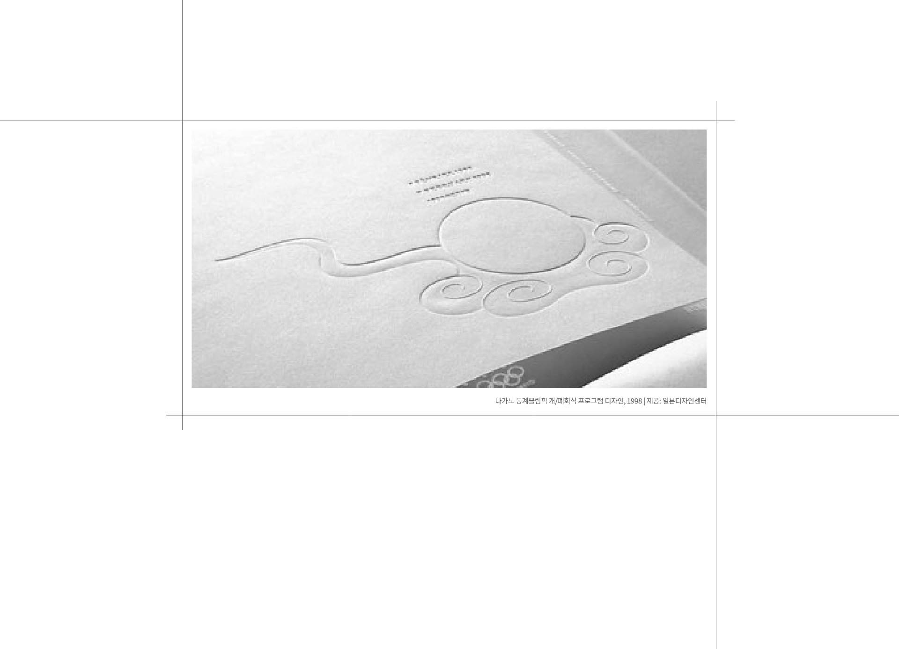

햅틱, 시각에서 촉각으로
‘햅틱’ 전시회는 촉각을 중심으로 한 ‘햅틱Haptic’에 관한 다양한 성찰을 보여준 전시로 2004년 일본에서 처음 열린 이후로 전 세계를 순회하며 진행되고 있다. 하라 켄야가
기획하고
건축가, 제품디자이너, 의상디자이너, 전통 공예가와 하이테크 회사의 디자인팀 등 다양한 분야의 전문가들이 참여하였다. 시·청각에 초점을 둔 디자인보다는 촉각에 중심을 두고 인간의
감각을
탐구하는 발상의 전환을 보여준 전시이다. 한국에서는 ‘2008 서울디자인페스티벌’ 행사에서 전시되었다.
